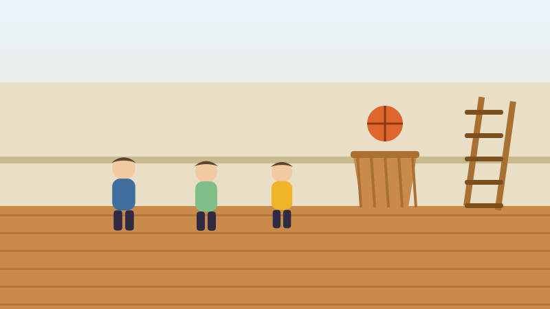

🏀 For Kids
A Canadian Invented Basketball, With Two Peach Baskets
One of the most played games on Earth was invented in two weeks by a Canadian who just wanted a noisy class to calm down.

A boy from Almonte, Ontario
James Naismith was born in 1861 near Almonte, a small town in Ontario, and grew up on a farm.
He studied at McGill University in Montreal and became McGill's first full-time athletics instructor. Then he moved to the United States to teach physical education in Springfield, Massachusetts.
A very long winter and a very bored class
New England winters are hard. The students were stuck indoors, they were bored, and they were getting difficult. Naismith's boss gave him a job: invent an indoor game, and do it quickly.
It had to work in a small hall. It could not be rough, because a wooden floor is not a soft place to be tackled. And it had to be fun enough that the class would stop complaining.
Naismith remembered a game he had played as a boy in Ontario, where you threw a stone in a gentle arc to knock another stone off a rock. Aiming carefully beats throwing hard. That gave him his idea: put the target up high, so players must lob the ball rather than fire it.
Two peach baskets and a ladder
He asked the caretaker for two boxes. The caretaker did not have boxes. He had two peach baskets, so that is what got nailed to the railing at each end of the hall.
The baskets still had their bottoms in. So every time somebody scored, the game stopped, and a person climbed a ladder to fetch the ball back out.
Naismith wrote thirteen rules and pinned them up. That was the whole game. Thirteen rules, in December 1891.
Those two typed pages still exist. In 2010 somebody paid 4.3 million dollars for them, and today they are on display at a university in Kansas, where Naismith later went to work.
What happened next
The game spread astonishingly fast. Students went home for the holidays and taught it to everybody they knew.
Naismith later coached basketball at the University of Kansas. Here is a detail worth keeping: he is the only coach in that university's history who lost more games than he won.
The man who invented the game was not the best at playing it, and that did not matter at all.
Words to know
- Invent
- To make something that did not exist before.
- Caretaker
- The person who looks after a building and keeps it working.
- Rules
- The list of what you may and may not do in a game.
Now try three questions
No timer and no score to worry about. Every answer tells you why.
About this quiz
This story tells how James Naismith, born near Almonte in Ontario, invented basketball in December 1891 with two peach baskets and thirteen rules, and what happened to the game and to him afterwards.
It is written in short sentences for children aged six to nine, with a picture drawn for this site and three questions at the end. Tap the Read aloud button and the page will read the questions out loud.